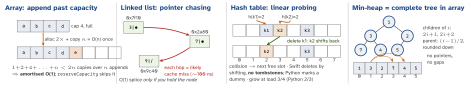
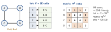
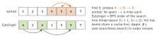

cs · folio
In one line: Every structure is a memory layout plus an invariant that makes some operations cheap and others expensive. Pick by the operation that must be fast, then check the constants: a trip to main memory costs ∼50× an L1 hit, so contiguous memory + cache lines beat pointer chasing at equal big-O.
Download PDF Print view LaTeX source


How each one works
- Array — one block, element i at
base + i·stride(MemoryLayout<T>.stride) ⇒ O(1) index. Scans ride the prefetcher; a cache line (64 or 128 B) brings 8–16Ints per miss. Middle insert / delete shifts O(n).[SomeStruct]holds values inline;[SomeClass], a Pythonlist, a JavaArrayList<Integer>hold references — contiguous pointers to scattered objects. - Linked list — one allocation per node; a textbook doubly linked list pays two links per datum (200 % overhead) and one
malloceach — why CPython’sdequelinks 64-slot blocks instead. Wins only for O(1) splice at a held node and stable addresses; finding it is O(n). - Hash table —
hash(key) mod m→ bucket, load α= n/m; chaining (JavaHashMapbins) or open addressing (Swift, Python). - BST — left < node < right, O(h); sorted inserts give h = n. AVL: subtree heights differ ≤1, h ≤ 1.44 log2 n, faster lookups. Red-black: no red–red, equal black height, h < 2 log2(n+1), ≤2 rotations per insert, ≤3 per delete (Java
TreeMap). B-tree: one node = one disk page (SQLite: 4096 B); fan-out f ⇒ height logf n (100-way: 106 keys in 3 levels). - Skip list — a sorted linked list plus random “express lanes”: expected O(log n) with no rebalancing; Java’s
ConcurrentSkipListMaplets threads insert and remove concurrently; Redis sorted sets = skip list + hash table. - Binary heap — complete tree in an array, parent ≤ children. peek O(1); push = append + sift-up, pop = last to root + sift-down, O(log n); heapify O(n). Swift’s
Heapis min-max: even levels ≤ descendants, odd levels ≥ ⇒ bothminandmaxO(1). - Trie — node per prefix: O(L) per op whatever n is; answers prefix queries a hash set can’t. A hash trie (CHAMP: Swift
TreeDictionary) walks 5 hash bits per level into 32-way nodes; copies share every unchanged subtree. - Graph — adjacency list O(V+E) space, neighbours O(deg); matrix V×V (V2/8 bytes as bits), “edge u–v?” O(1), neighbours O(V). BFS / DFS O(V+E) on a list; Dijkstra with a binary heap O((V+E) log V).
- Union-find — parent array + path compression + union by rank ⇒ O(α(n)), α≤4 for any real n: components, Kruskal.
Growth factors — code, not contract
| container | new capacity when full (source code) |
|---|---|
Swift Array, Rust Vec | ×2 |
Java ArrayList | ×1.5 (old + (old >> 1)) |
Java ArrayDeque | ×2 below 64, then ×1.5 |
| Go slice | ×2 below 256, then easing to ×1.25 |
Python list | n + n/8 + 6, rounded to 4: 0, 4, 8, 16, 24, 32, 40, 52, 64, 76 … |
Apple’s and Java’s docs promise only amortised-constant append — the factor is an implementation detail. 2× can never reuse the blocks it freed (their sum is always smaller than the next request); 1.5× can after 4 reallocations (folly’s fbvector rationale).
One graph, two layouts

Example — freeing a long class list
final class Node<T> {
var value: T; var next: Node?
init(_ v: T, next: Node? = nil) { value = v; self.next = next }
deinit { // default: each deinit frees the next → recursion
var node = self // walk instead, while the link is unique
while isKnownUniquelyReferenced(&node.next) {
(node, node.next) = (node.next!, nil) }
}
}The loop stops at nil (false) or at the first node another owner still holds — that node and its tail stay alive.
Big-O — average (worst)
| structure | access | search | insert / delete | note |
|---|---|---|---|---|
| array | 1 | n | n; end: 1am | |
| sorted array | 1 | log n | n | the shift dominates |
| linked list | n | n | 1 at node | find the node: n |
| stack/queue/deque | ends 1 | n | ends 1 | array queue front: n |
| hash table | — | 1 (n) | 1am (n) | hashing key = O(len) |
| BST, plain | — | log n (n) | log n (n) | sorted input → n |
| AVL / red-black | — | log n | log n | in-order = sorted |
| skip list | — | log nexp | log nexp | randomised levels |
| binary heap | min 1 | n | log n | build O(n) |
| trie | — | L | L | L = key length |
| adj. list / matrix | — | deg / 1 | 1 / 1 | space V+E / V2 |
n = 106: log2 n ≈ 20 · n log n ≈ 2×107 · n2 = 1012 — at 109 steps/s: 20 ns · 20 ms · 17 min.
Same roles, three runtimes
| role | Swift | Java / Kotlin (JVM) | Python |
|---|---|---|---|
| growable array | Array | ArrayList | list |
| hash map | Dictionary | HashMap = hashMapOf() | dict |
| insertion order | OrderedDictionaryc | LinkedHashMap = Kotlin mutableMapOf() | dict (guaranteed since 3.7) |
| sorted map | SortedDictionaryc (B-tree, unstable trait) | TreeMap (red-black) = sortedMapOf() | list + bisect |
| queue / stack | Dequec · Array | ArrayDeque (not legacy Stack) | collections.deque |
| priority queue | Heapc (min-max) | PriorityQueue (min) | heapq (min; max 3.14) |
| binary search | partitioningIndexa | Collections.binarySearch | bisect |
c swift-collections · a swift-algorithms — the Swift stdlib itself has no deque, heap or sorted tree.
Inside the Swift types
Set/Dictionary: 2k buckets, ≤ 3/4 full, an occupancy bitmap. Seed = the table’s address: new on every allocation and resize (kept for COW copies) — two equal sets need not iterate alike, even in one run.- Three ways to keep insertion order:
OrderedSetand Python’sdict= dense array + a hash table of indices (middle insert / remove renumbers: O(n) inOrderedSet); Java’sLinkedHashMapthreads a doubly linked list through its entries (access order → an LRU cache). Deque: circular buffer (may wrap). A class-elementArraymay be anNSArray,ContiguousArraynever.InlineArray(26.0): no own allocation, copied eagerly.
Layout beats big-O: binary search

Traps
- A 500k-node class list overflows the stack in its default
deinit(indirect enums: no source fix). A strongprevis a retain cycle —weak. - “Linked lists insert faster” — only at a held node; the O(n) walk and cache misses lose to
Array’s memmove. - Amortised ≠ worst case: one append can copy O(n) inside a 16 ms frame or an audio callback —
reserveCapacity,init(minimumCapacity:), a fixed ring. - A heap is not sorted:
contains/remove(x)are O(n), and Dijkstra’s decrease-key needs a vertex → position map beside it.
Remember
Layout decides speed, invariant decides big-O. Contiguous by default; pointers only when you must splice.